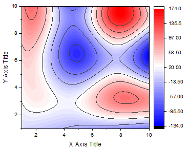

最終更新日：2020/2/23
3色限定混合のカラーマップグラフで、色範囲中に特別なポイントを設定して、そのポイントが中央色で表示され、さらにこの値で目盛が表示されるようにするには以下のように操作します。
デフォルトテンプレートにより作成された左の色付き等高線図を例とします。中央色である白は、Z範囲の中央の値であるZ値=20にあります。中央の色を39.25の位置(主レベルでない)に移動し、色スケールで「39.25」を表示します。つまり、すべての目盛はこのアンカーポイントに従って再計算および再配置されます。
|  | |
| デフォルトの色付き等高線図 | 固定のZ値 = 39.25 |
Note: このオプションは、ワークシート: 条件フォーマット: ヒートマップでも利用可能です。
Note: このオプションは、3色限定混合に限らず、全てのカラーマップグラフで使用できます。
キーワード:カラーマップ, 等高線, 等高線スケール, 特別な値を表示, ポイント固定, 値を通る